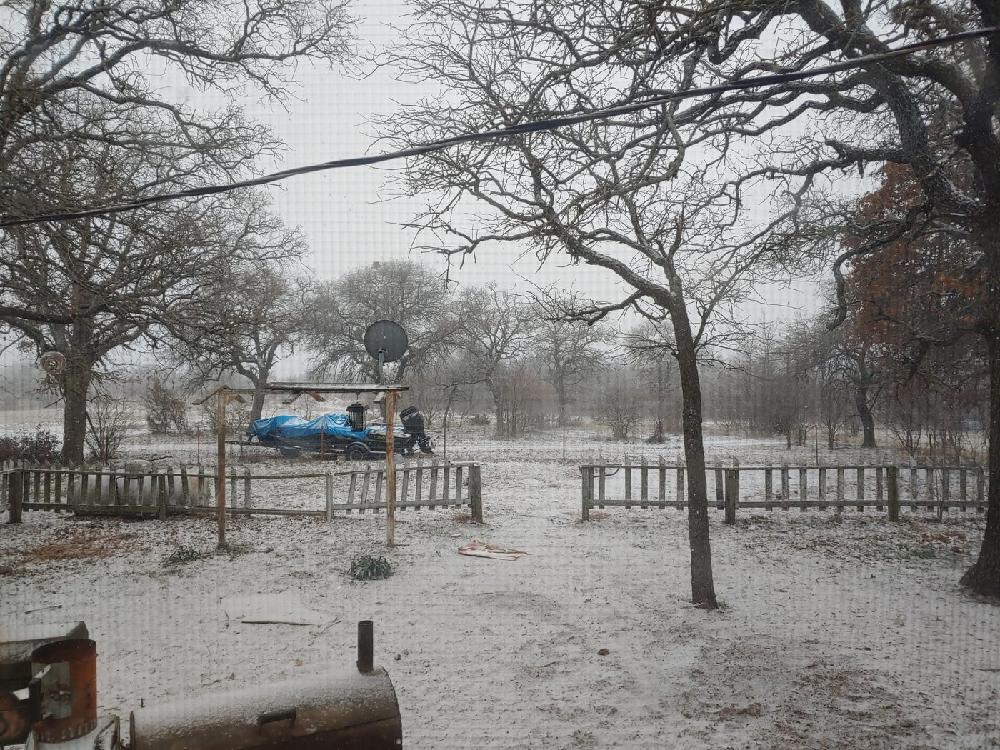
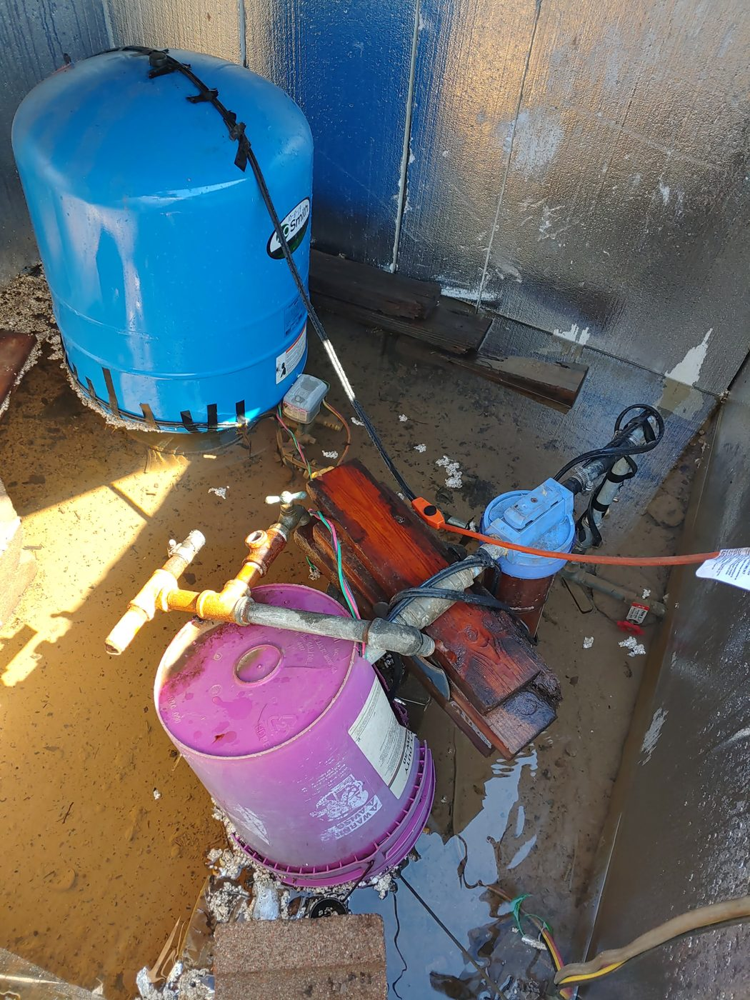

No power, no well pump, no water: a week in Winter Storm Uri.
Preparedness stops being theory the first morning you turn a tap and nothing comes out. In February 2021, Winter Storm Uri sat on North Central Texas for the better part of a week, collapsed the state's power grid, and — because our water came from an electric well pump — cut off our running water right along with it. This is what that week actually looked like, and what it taught me.
Uri was no ordinary cold snap. On February 16, 2021, Dallas–Fort Worth bottomed out at −2°F, the coldest North Texas had been in 72 years, and the freeze held for days. The grid started shedding power in the small hours of February 15, and more than 4.5 million Texans lost electricity — many of us for four days straight. Here is the part city folks miss: when the power dies, an electric well pump dies with it. No lights, no heat, and not a single drop from the tap. Boil-water notices would eventually reach over 14 million people statewide. We were on our own — and there was no bugging out to a motel, either. Every room within reach was booked solid or sitting dark for the same reason we were.

How we got water with the well pump dead
The house was an old Sears kit farmhouse, and thank God for it. It came with a real fireplace — the old-school kind with a swinging iron crane you can hang a cast-iron pot from. When the grid went down and the pump went silent, that fireplace stopped being charming and started being infrastructure. Between it and a rocket stove out back, I melted snow and ice down into water — first for drinking and washing hands, then for the bigger job of staying clean. If you are on a well, understand this now: your water is only as reliable as your electricity, so you need a way to source and treat water that does not depend on the grid, and more stored than you think you need.

How we cooked and heated water without power
That fireplace crane earned its keep three times a day. Cast iron over a wood fire will boil, fry, and simmer just fine once you learn to work the coals, and it doubled as our only real heat source in the coldest part of the house. A fireplace or wood heat that can both warm a room and cook and melt water is worth its weight when the furnace is a dead box on the wall.
How we bathed with no running water
Bathing is the part nobody warns you about. A week with no running water gets grim fast, so I improvised: I took a brand-new pump-up sprayer — the kind made for spraying weeds or pests — filled it with warmed water, screwed a garden watering nozzle onto the wand, and pumped it up to pressure. That was our shower. We took turns under it for a week, and it worked far better than it had any right to: warm water, real pressure, no plumbing. Staying clean is a real problem in a long outage, which is exactly why off-grid sanitation belongs in every plan.
And then the comedy that was not remotely funny at the time: it was so cold we had to bring the dogs inside so they would not freeze, and wouldn't you know it, both of them had taken a direct hit from a skunk. That sulfur smell in a closed-up farmhouse for days is a special kind of misery. But you do not let your pups freeze, so you breathe through your mouth and you deal with it. Preparedness is not the clean, staged version on the internet. It is cold, it stinks, and you make it work. And when the thaw finally came, it brought its own bill — burst pipes on the well to find and fix. Start to finish, it was a real test of our preparedness, and it is the reason I take this seriously.
What that week taught me
- Water is the first thing to vanish on a well. No power means no pump. Store more than you think you need and have a grid-free way to treat water.
- You need heat that also does work. A fireplace or wood heat that warms the house and cooks and melts water is worth more than any single-purpose gadget.
- Hygiene is a real problem, so plan for it. A pressurized sprayer, a plan for waste, and a way to stay clean matter more than people expect — see off-grid sanitation.
- It will be messier than you imagined. Skunked dogs, no water, and a week of record cold all at once. Redundancy and a calm head beat any single perfect gadget.
The one piece of gear that earned its keep that week was a simple rocket stove for melting and boiling water outside. (rocket stove on Amazon — as an Amazon Associate I earn from qualifying purchases.)
That is the whole reason GridDownData exists. The knowledge that got us through that week — how to treat water, cook without power, heat a room, and handle sanitation — should not live on a website you cannot reach when the grid is down. It should be in your hands, offline, before you need it.
Get Your Vault